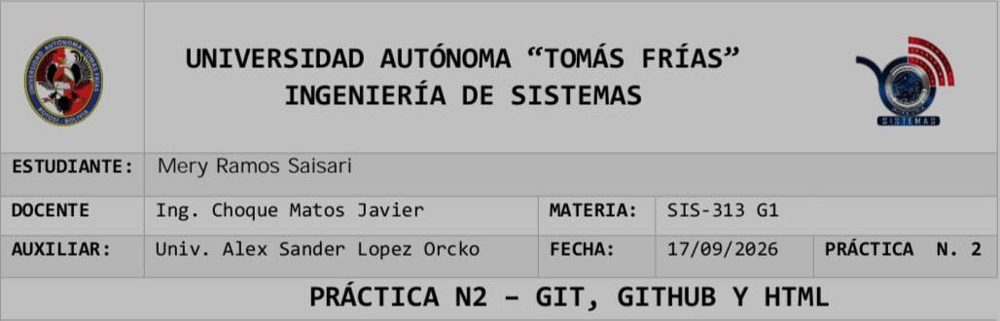

Git es un sistema de control de versiones distribuido. Su función principal es registrar los cambios de
los archivos de un proyecto, permitiendo volver a versiones anteriores y trabajar en equipo.
Git es la herramienta local de control de versiones; GitHub es la plataforma en la nube que aloja repositorios Git
y permite colaboración.
git status → git add . → git commit -m "mensaje"
git remote add origin [URL] y git push -u origin main
Es una línea independiente de desarrollo que permite trabajar sin afectar la rama principal.
git branch nombre → git checkout nombre → git add . → git commit -m "..." → git push -u origin nombre
Es cuando dos ramas modifican la misma línea. Se resuelve editando el archivo manualmente, luego git add
y git commit.
Este es mi horario de la gestión 2026 semestre 2 =D